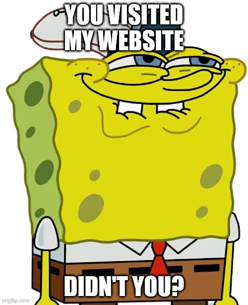

All About Memes
This is a scene from "Just One Bite." After Squidward is caught sneaking off with a Krabby Patty, SpongeBob asks him several questions. Soon, SpongeBob makes a certain facial expression by raising his head and biting his lower lips, saying, "You like Krabby Patties, don't you Squidward?" SpongeBob's facial expression has become very popular in Internet videos. Other people copying SpongeBob's facial expression have also parodied it. And it was also referenced in "Knock Knock, Who's There?" when SpongeBob looks at his feet. (Source: https://spongebob.fandom.com/wiki/List_of_memes)
If you would like more information on the origin of a meme, click here.
I created this page to allow any user, whether you are 15 years old or 90 years old, funny or utterly and completely serious all the time, to submit your favorite memes to me. My team of "trained professionals" will examine these memes and rank them based on the following criteria:
Relevance- How popular the meme or topic is.
First Impression- How intrigued I am to read the whole thing--I do not have all day.
Execution- How well did you design the meme and layout the joke.
And, last but not least...
Overall Humor- It better make me laugh.
Created by Bradley Pawlow